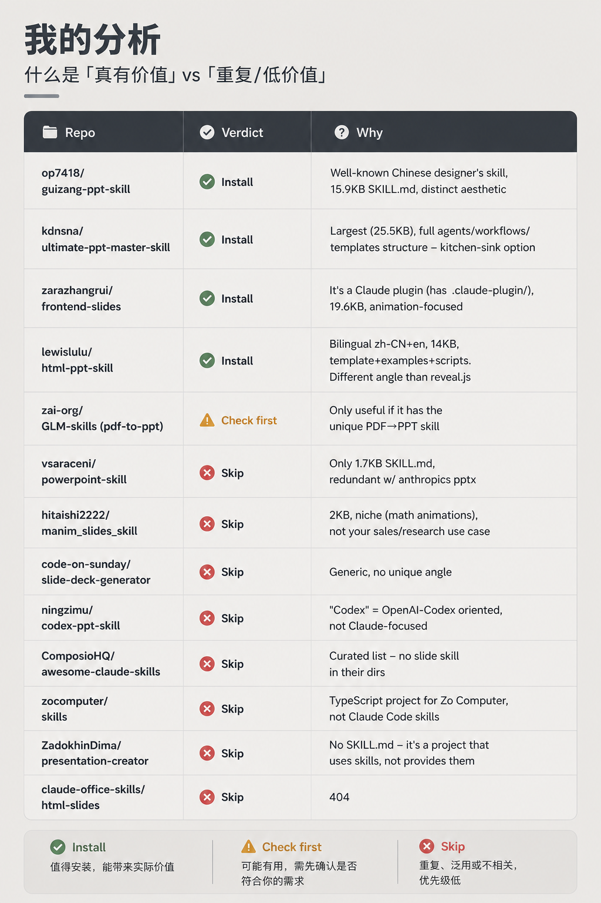
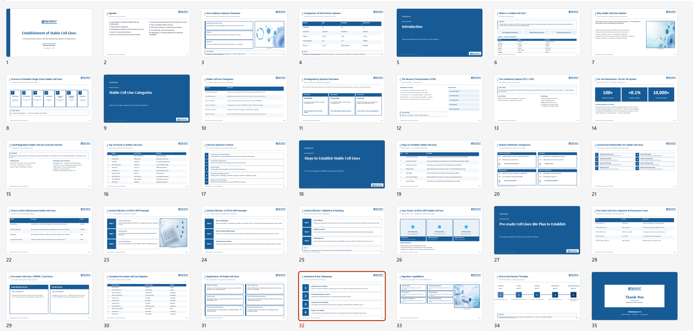

← 回到首页
用 Claude Code 做 PPT 听起来很美好——用自然语言描述内容，自动生成幻灯片。但实际去 GitHub 上找 PPT 相关的 Skills，会发现几十个项目里大部分要么是给 Codex 用的、要么没有 SKILL.md、要么直接 404。
我花了点时间把能找到的全扒了一遍，最后只留了 4 个真正值得装的。

我的筛选分析。「真有价值」vs「重复 / 低价值」——逐个排查，不兼容的、缺文件的、纯 Codex 的、已失效的，全部标 Skip。最后只有 4 个通过测试。
4 个值得装的 PPT Skills
均已实测，互不冲突，可以同时安装
guizang-ppt-skill
稳定的基础款。页面布局简洁整齐，设计感不错，普通逻辑图和内容幻灯片都能跑出来。几十上百页也不错位、不出错。
npx skills@latest add op7418/guizang-ppt-skill
ultimate-ppt-master-skill
功能最全面的一个。支持多种布局变化，能在保持设计一致性的同时做到页面间有变化，不是千篇一律的模板感。
npx skills@latest add kdnsna/ultimate-ppt-master-skill
frontend-slides
走 HTML 路线生成 slides，渲染效果比传统 .pptx 更灵活。如果你最终是要在浏览器里展示而不是下载 PPT 文件，这个更合适。
npx skills@latest add zarazhangrui/frontend-slides
html-ppt-skill
另一个 HTML 幻灯片方案，和 frontend-slides 定位类似但风格不同。可以都装上，根据内容类型切换。
npx skills@latest add lewislulu/html-ppt-skill

实际输出效果。用上面这几个 Skill 跑出来的成品——结构、版式、配色、密度都在线，几十页也不错位。这是真实可用的产出，不是 demo 截图。
这 4 个 skill 解决的是「结构和内容」的问题。如果你还想提升视觉品质，可以多做一步：用 Claude Code 生成 PPT 结构之后，再拿去配高级感的背景图、插图和图标。具体做法是先让 AI 生成图片素材，放到文件夹里，再让 Claude Code 一键组装。
这些 Skills 的核心格式（SKILL.md + 提示词逻辑）其实是跨平台通用的——换个目录结构就能在 OpenAI Codex 里跑。如果你同时在用两个工具，这些投资不浪费。